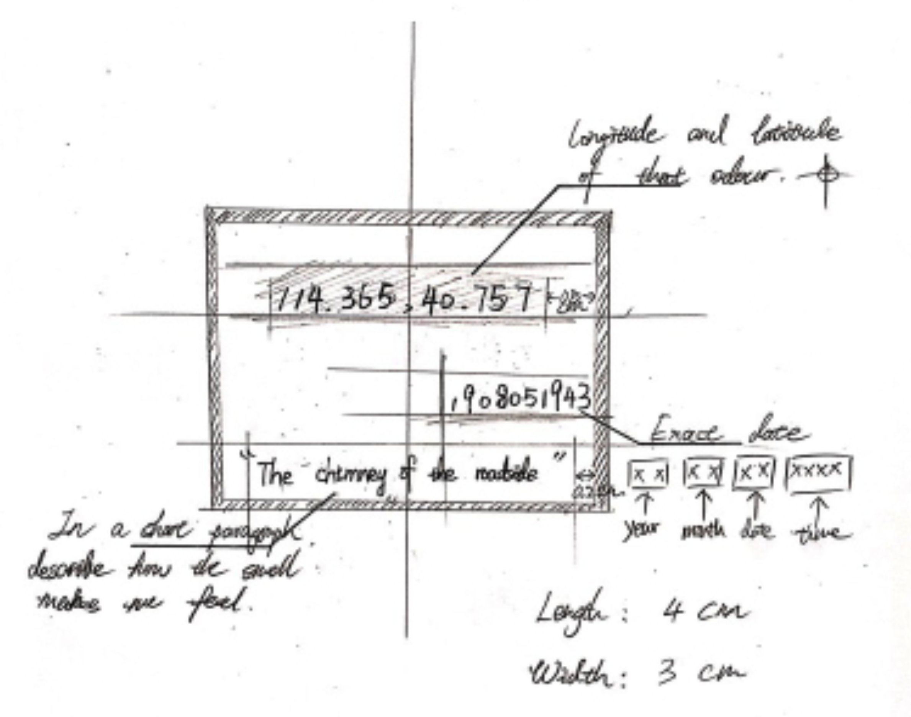

BOTTLES OF MEMORIES

Smells that occasionally appeared may trigger specific memories in mind. These ignorable smells fill in our daily life, becoming an indispensable element of it. Like a diary, these smells record the bits in our daily life: the disinfection water during the epidemic, the damp wood drifting in the creek, and the smell of food and cookfire on the street corners. These smells build up our everyday life. This inspired me to create a “Scent Diary” to preserve these special smells. In this way, whenever I sense one of the recorded smells, the memories of that day will be recalled.

Therefore, I began to search for and record all kinds of smells that seem impressive to me, recording them on my notebook in forms of photos, and attaching easily portable objects to the notebook, thus preserving them together. In order to be able to preserve these smells over a long time, I processed them in a way similar to refining essences, and then kept these processed spices in the bottle based on dates. Whenever I unscrew a cap, the smell in the bottle will bring me back to that memory.
To trigger a specific experience, I marked the latitude and longitude of the source of the smell and the time of that particular moment.In addition, I used a sentence right below the label to briefly summarize the feeling that the smell brought to me. In this way, whenever I see the information on the label and sense the smell in the bottle, I can travel through the past experience. Just like a diary, every time I pop open a bottle of “diary”, the smell will make me relivethe experience in my mind.